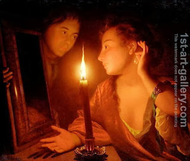

Pesachim 53 - Customs not to follow
A while ago, there was a custom not to sell large livestock to gentiles, for the following reason. One may sell an ox or a horse just before Shabbat, the buyer may then ask to demonstrate the animal’s prowess, and the Jew would spur it on with his voice, thus causing the animal to work on Shabbat. (This prohibition is not in force today).
Going together with it, some communities adopted a prohibition not to sell small livestock - so that one does not come to sell large livestock. Others say that the prohibition was added to prevent sodomy. However, this is a kind of custom that was not generally adopted, and one is not obligated to conform to it, even in a city where everyone else does so.
In a similar vein, in some places people had a custom to light a candle in a house on the night of Yom Kippur, and in some - not to light it. Both, however, intended for the good: those who lighted did so to prevent cohabitation on Yom Kippur, since in general it is prohibited with the light of a candle. Those who did not light did so in order not to see the beauty of the spouse and not to be aroused by it.
Art: A Lady Admiring An Earring by Candlelight by Godfried Schalcken